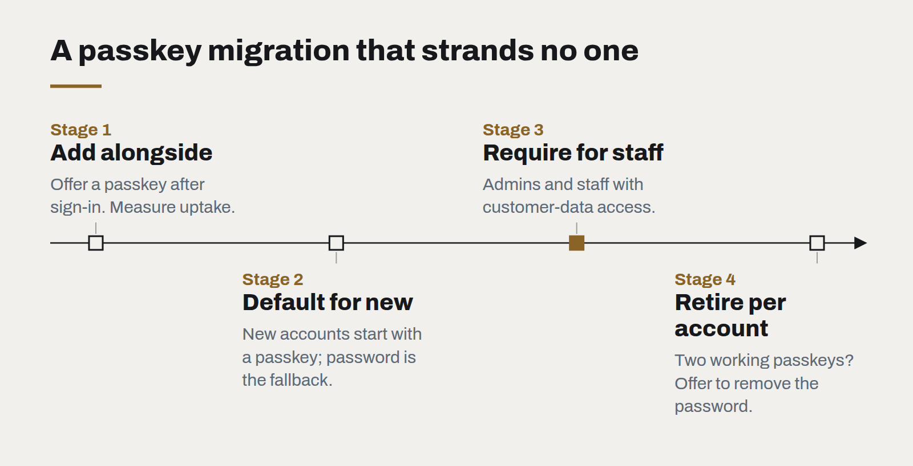

Passkeys are ready. Your login page probably isn't.
Phishing-resistant sign-in now works across the devices your customers already own. The technology is done; what remains is product design and a sensible migration plan.
Passwords remain the weakest part of most business systems. They are reused, phished, guessed and leaked, and every defence layered on top — complexity rules, rotation, SMS codes — adds friction without removing the underlying problem. Passkeys, built on the WebAuthn standard, remove it. Instead of a secret the user types, sign-in uses a key pair: the private half stays on the user's device, protected by their fingerprint, face or device PIN, and it will only ever respond to the genuine website.
That last property is the important one. A passkey cannot be typed into a fake login page, because it is bound to the real domain. Phishing, the most common way business accounts are compromised, simply stops working.
Why now
For several years passkeys were technically sound and practically awkward. That has changed. The major phone and computer platforms now support them, sync them across a user's devices through their existing account, and let people sign in on a new device by scanning a code with their phone. For most customers the experience is quicker than a password: tap, look at the phone, done.

What stands in the way is product design
The remaining obstacles are almost all in how services introduce passkeys, not in the technology.
- Discovery. Users will not go looking for a passkey setting. The right moment to offer one is straight after a successful sign-in or a password reset, with one sentence explaining the benefit.
- Language. "Passkey" means nothing to most people yet. "Sign in with your face or fingerprint" does.
- Recovery. People lose phones. A service needs a clear, secure path back in — a second passkey, a recovery code, or verified identity — before it can let anyone drop their password.
- Shared and managed devices. Staff on shared terminals, or in organisations with strict device policies, need an option that fits, such as a hardware security key.
A migration that doesn't strand anyone
We recommend a staged approach:
- Add passkeys alongside passwords. Offer creation after sign-in. Measure uptake and sign-in success rates.
- Make passkeys the default for new accounts, with a password as the fallback rather than the other way around.
- For staff and administrators, require them. Internal accounts with access to customer data are the highest-value targets and the easiest population to support.
- Retire passwords per account, not per system. Once a user has two working passkeys, offer to remove their password entirely.
Questions for your next security review
- What share of account compromises in the last year began with a phished or reused password?
- Do administrator accounts use phishing-resistant sign-in today?
- What does account recovery look like, and could an attacker use it to bypass everything else?
Passkeys will not fix every security problem. But few changes remove an entire category of attack while also making sign-in faster for users. It is worth putting on this year's roadmap.
What changes when software is cheap to write
AI coding tools have made producing code dramatically faster. They have not made deciding what to build, checking that it works or running it for years any cheaper — and that shifts where the value is.
Legacy modernisation without the big bang
The rewrite that replaces everything at once is the most reliable way to lose two years. Replacing a system one route at a time is slower to describe and much faster to finish.
WebGPU and the return of the rich web
Real-time 3D, large visualisations and on-device AI now run in an ordinary browser tab. The question is no longer whether the web can do it, but whether your content deserves it.